I sketch a little something most days, usually in the morning. Hence, I make a lot of drawings of my mug or other breakfast items. In December, I wanted to explore ways for encoding quantities. Starting from 1 all the way to 24 I tried out different marks to show increasingly large numbers. I was wondering which would be clear, or easy to decode, or just pretty. Enjoy my little data-vis advent calendar!
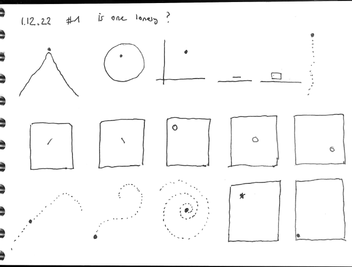
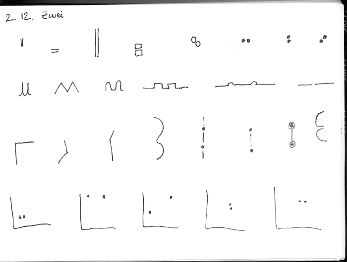
Figure 1: 1 is tricky - it needs something around, a frame, to really focus the attention on the one dot, or the one mark etc. When it is enclosed by a rectangle it appears more like position is communicated - not the quantity. 2 items can already form a line, a visual group - it is getting easier to recognize that a quantity is shown. I like the mountains and waves :) And, again, the Cartesian coordinates are confusing and distract from a quantity.
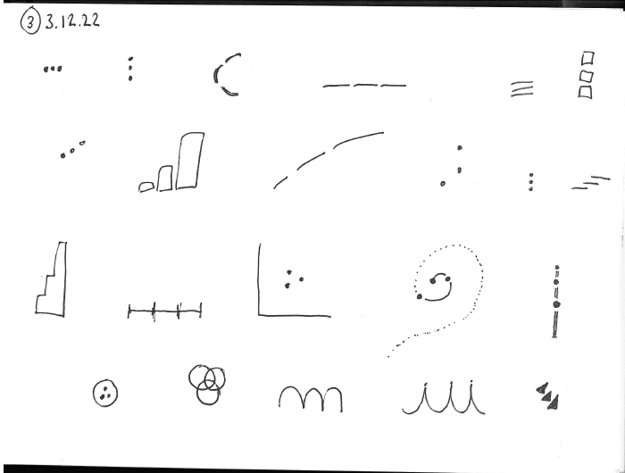
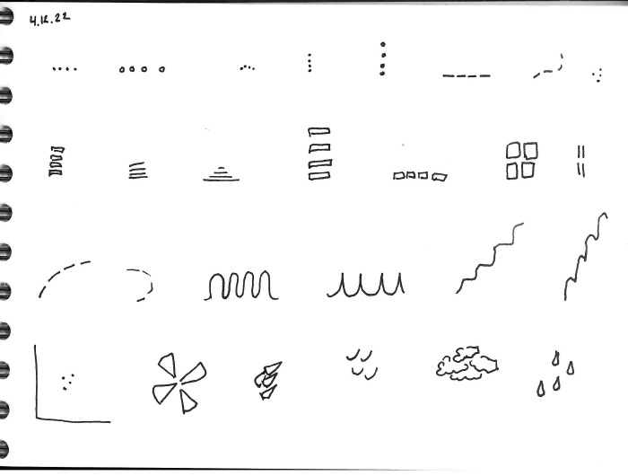
Figure 2: 3 works nicely with dots, lines or rectanges, and still works with waves and mountains. 3 was fun! Oh, and 4 was even more fun - maybe I am also getting the hang ot it. I tried dots, lines, round lines, rectangles, clouds and drops. I feel like the “stairs” going up is not working at all - and also waves and dots in RANDOM (bottom left) order is getting tricky already.
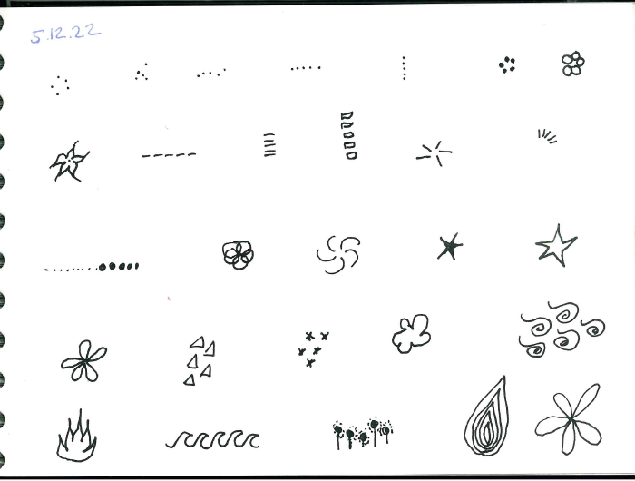
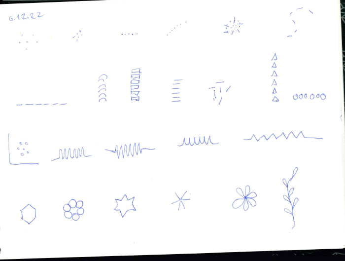
Figure 3: Fun ways for 5 - i think it is most clear when items are neatly arranged. The many fun ways, flowers starts etc work probalby a lot better as multiples - when we can compare petal number or flame number etc. Now: 6! Pity I used a blue pen! But I leave it - errors are the beauty of real sketches. Six is not possible at all anymore as waves! And surprisingly tricky as petals - it may be me, but an uneven number is much better to see!
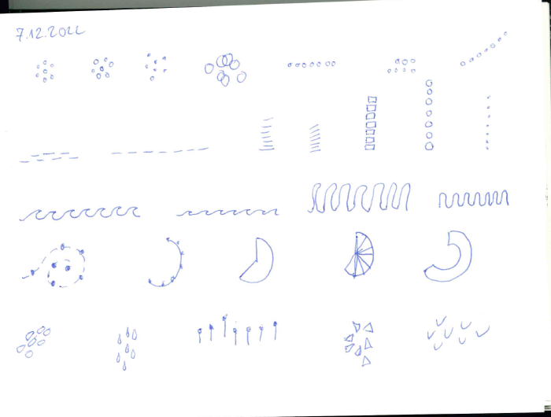
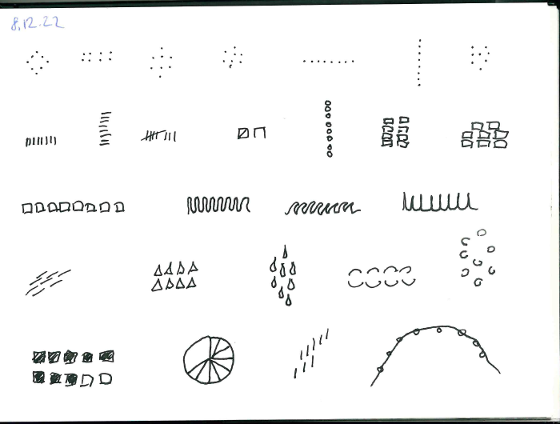
Figure 4: Impossible to see at first glance “7” in and of these. Too much for visually comprehension? We are now at “Magic number 7”, the limit Miller defined we can perceive pre-attentively. Given that seven was already challenging for me, I started to play with groupings for 8. Two lines, two rows of rectangles etc. The only iterations that I find easy are the tile-array (bottom left) and the system used in pubs etc, of four lines where fifth line goes across.
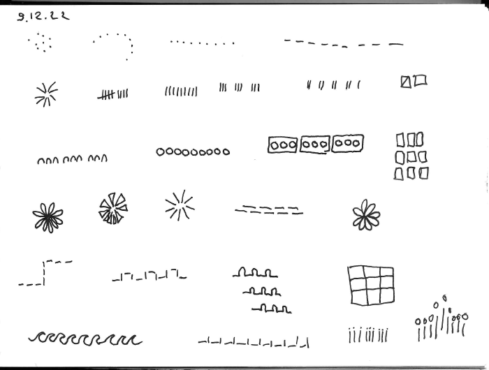
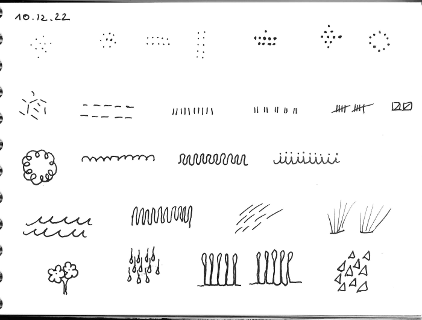
Figure 5: Same as eight, 9 works best when it forms groups. Really easy are 3x3 goups, or rectangles, lines, or dots. I even once supported grouping by proximity with an enclosure (looks like 3 traffic lights sideways, third row, second from right), I know the Gestalt principles! For 10 mostly same as nine - if grouped it works well (second row right examples), even with tricky shapes (bottom line, little “plants”).
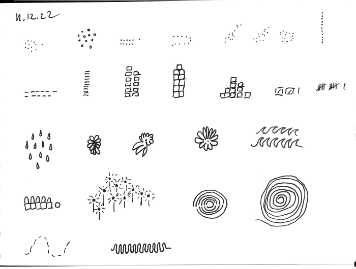 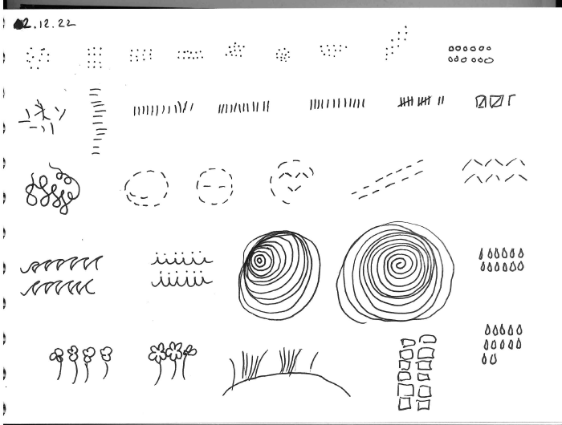 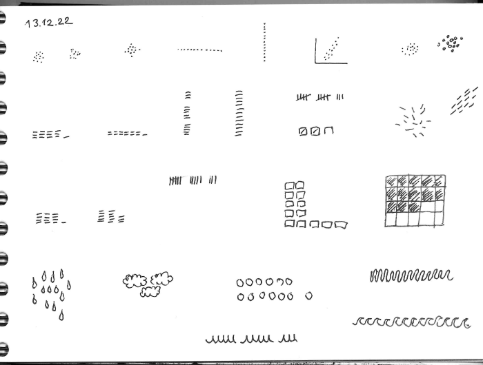 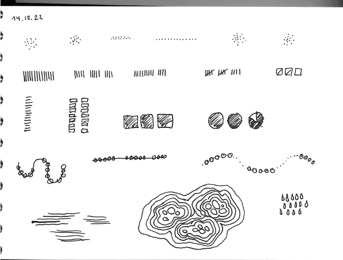
Figure 6: I have given up on being able to visually count - instead I just play around with shapes and groups. Readable imo are only the few that are using the talling system.
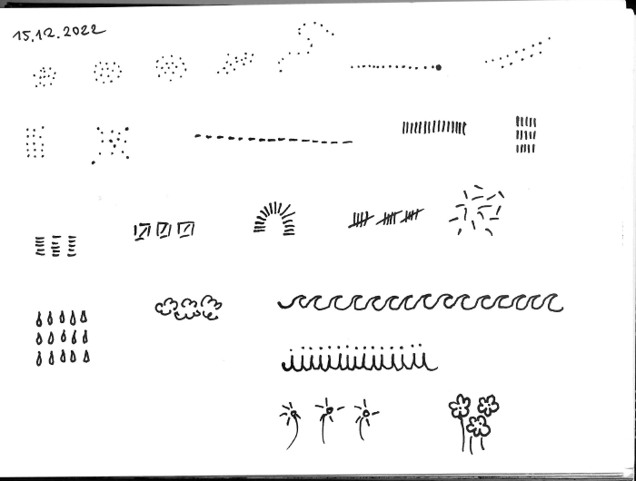 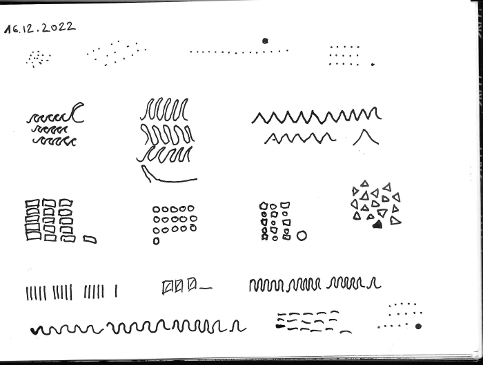 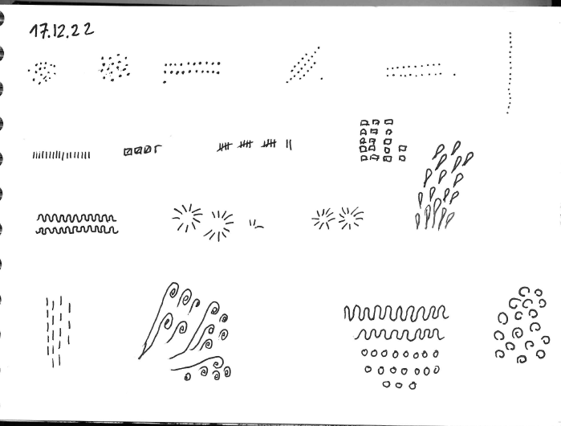 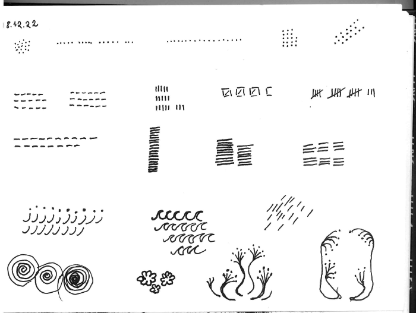
Figure 7: 15 to 18…. Getting messier! If you want clarity, tallying is the only hope, but for attraction the grouped flowers are starting to become interesting - and interesting is not bad, it captures attention and let’s readers linger a little longer.
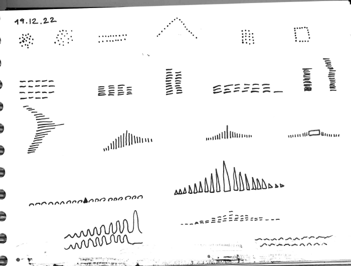 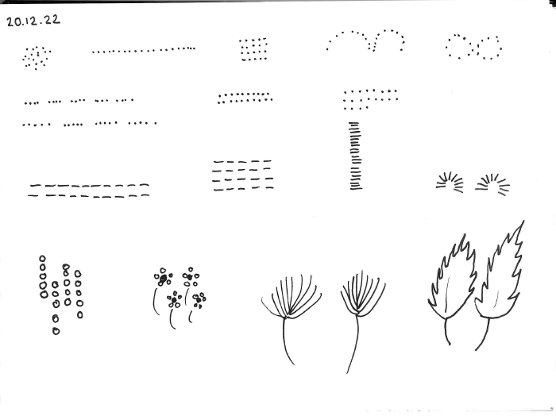 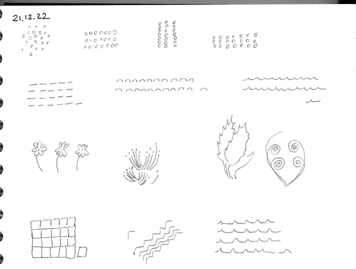 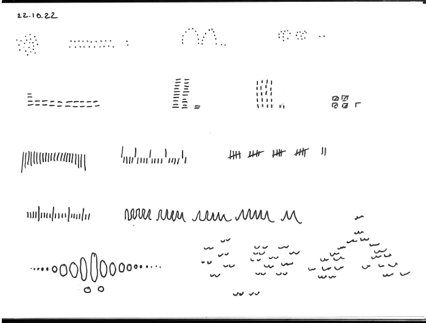 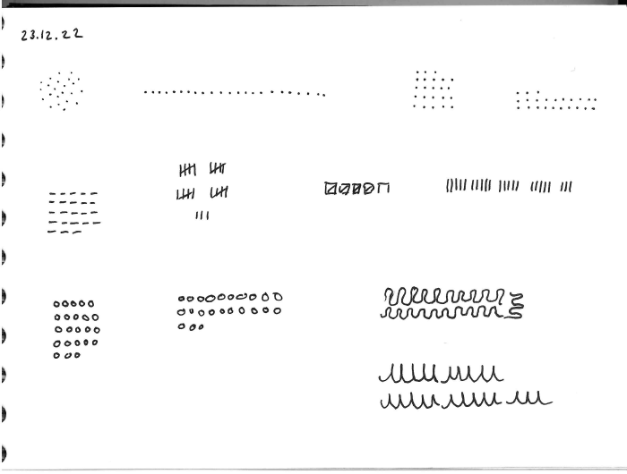 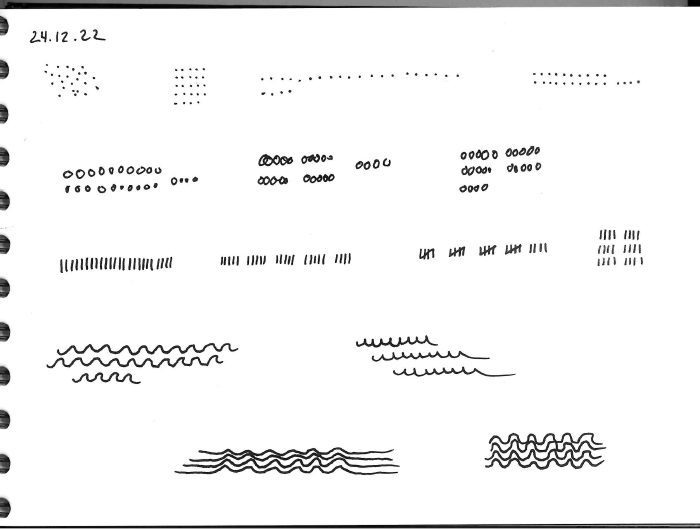
Figure 8: Oh well, at this point it does not matter anymore, but there are now so many items it becomes joyful to look at. Symmetries can be formed and broken, which is interesting! And flower bed are blooming :=)
This was fun! I guess there really is no point going onwards to New Years. The more items we got, the more important becomes their layouting and organisation. Happy new year and see you for next years advent challenge!